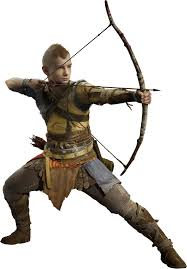
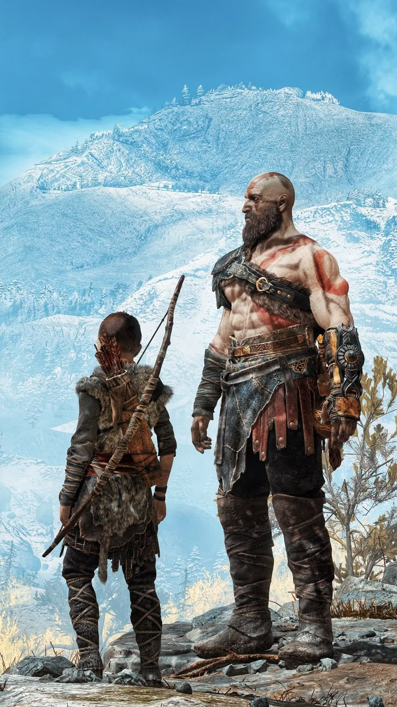

Origen e Identidad
Atreus es el hijo de Kratos y la gigante Laufey, también conocida como Faye. Nació en los reinos nórdicos y creció sin conocer la verdadera naturaleza de su herencia divina y gigante. Durante gran parte de su infancia, Atreus creyó que su padre era simplemente un hombre mortal, sin saber que Kratos era el famoso Fantasma de Esparta y un dios griego.
Lo que Atreus desconocía por completo era su otra identidad: Loki. Su madre Faye, siendo una gigante, tenía la capacidad de ver el futuro y sabía que su hijo estaba destinado a convertirse en la figura nórdica de Loki. Esta revelación se produce durante su viaje, cuando descubren que los gigantes se referían a él como Loki en sus profecías y murales del templo de Jötunheim.
Habilidades y Desarrollo
Atreus posee habilidades únicas que combinan su herencia divina y gigante. Es un arquero excepcionalmente talentoso, capaz de manejar el arco con una precisión notable incluso desde muy joven. Además, tiene la capacidad innata de entender y hablar múltiples lenguajes, incluyendo el lenguaje de las runas y el idioma de los gigantes, lo que demuestra su inteligencia aguda y capacidad de aprendizaje rápido.
A lo largo del viaje con su padre, Atreus desarrolla habilidades mágicas y de combate significativas. Puede invocar animales espirituales para ayudarle en batalla, lanzar hechizos rúnicos poderosos y curar heridas. Su carácter evoluciona de un niño enfermizo y curioso a un guerrero capaz, aunque lucha por controlar su ira y arrogancia, reflejando los mismos desafíos que una vez enfrentó su padre en su juventud.

Atreus utilizando su arco
Atreus junto a su padre Kratos en su viaje